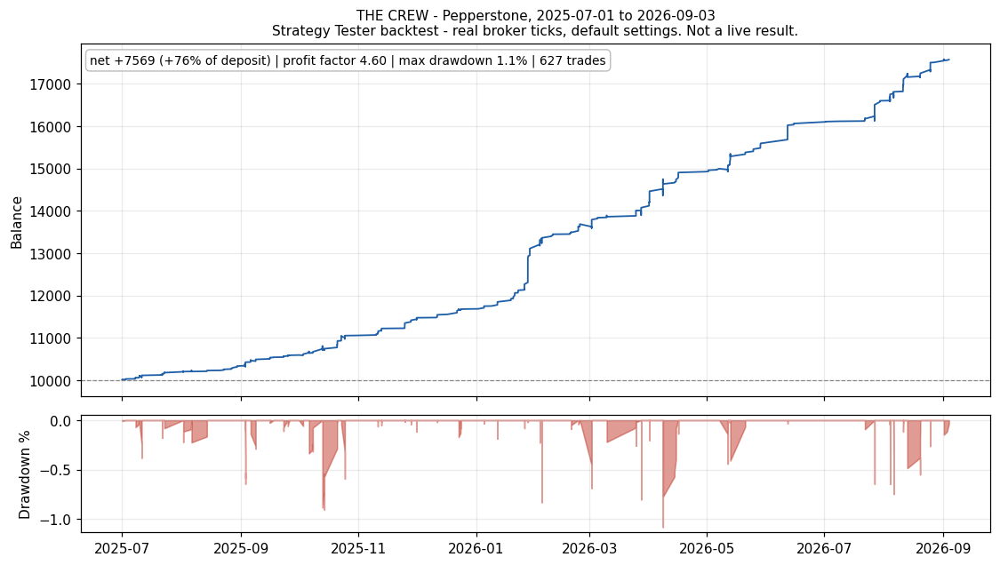
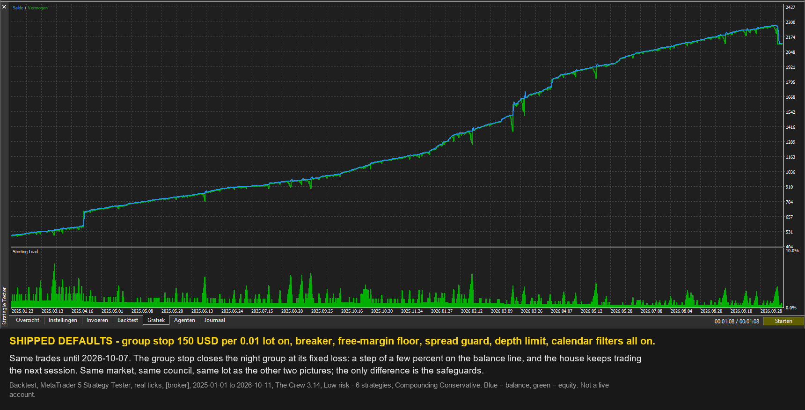
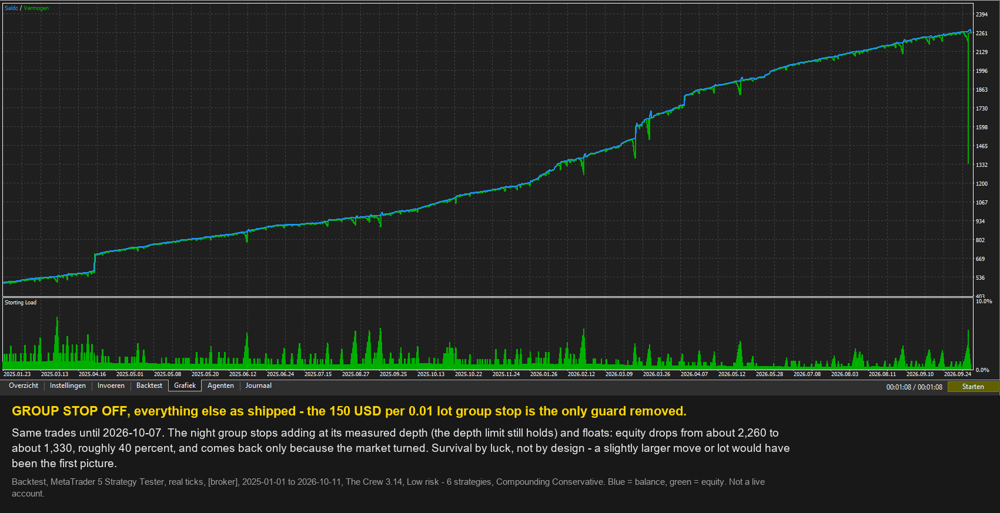
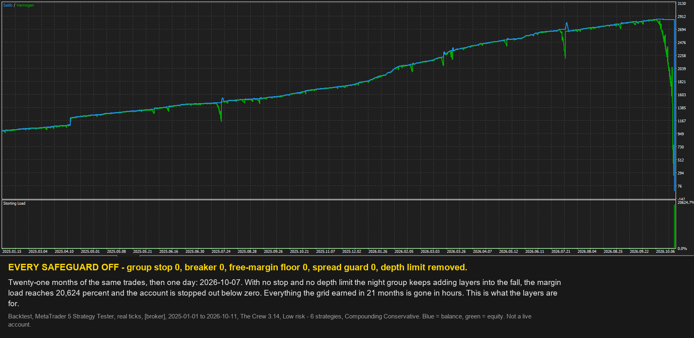

The Crew
XAUUSD · M1 · MetaTrader 5 Expert Advisor
View on mql5Read the manualHow it was built
Headline backtest
Profit factor 5.7 · worst equity drawdown 8.76% · 625 trades · return +128.0% on 10,000
Backtest, real ticks, BlackBull Markets, 2025-07-01 to 2026-09-07, version 3.14. The weakest of the live brokers tested, not the strongest.

Figures on this page come from the MetaTrader 5 Strategy Tester on real broker ticks. They are backtests, not live results.
The Crew is an MT5 Expert Advisor for gold (XAUUSD): a recovery grid with a stop loss. Session-timed specialists run a shared equal-lot grid, and every grid group carries its own hard stop (150 USD per 0.01 lot, read on every tick), so a one-way night closes the group at a known, fixed cost instead of averaging down until the margin runs out. Above the groups sits one account-level warden.
Most grid EAs are sold on their equity curve. This one is sold on its protection layers - six of them, each with a value that was measured, not guessed, and each one yours to change.
Six protection layers, and how each one was set
Every figure in this section: backtest, MetaTrader 5 Strategy Tester, real ticks, XAUUSD, BlackBull 2022-11-01 to 2026-09-07, IC Markets 2026-04-01 to 2026-09-07 and Vantage 2025-07-01 to 2026-09-07, at 0.01 lot unless stated.
- The lot. The engine is linear in volume: every layer of a group is the same size, so doubling the lot doubles both the profit and the floating loss and changes nothing else. That makes the lot a derived number, not a guess: the share of your balance you are willing to see floating, divided by the council's measured worst floating loss at 0.01 lot on your broker type. The EA prints that worst-case figure and the lot it derives at start-up. Static lot is one switch away.
- The compounding risk. The risk tiers are shares of balance floating, not multipliers: Conservative 10 percent (the default), Balanced 15, High 20, Extreme 30. The minimum balance per tier comes from a ruin-and-recovery profile: start the default council on every day of the records at 0.01 lot and count how often a loss line is touched within twelve months. A 20 percent loss stays under 1 chance in 100 from about 690; a 35 percent loss under 1 in 40 from about 330; a 50 percent loss under 1 in 20 from about 220 (backtest, raw-spread feeds 2022-2026, Low risk - 6 strategies, 0.01 lot).
- The group stop. Every group closes at a floating loss of 150 USD per 0.01 lot, scaled with the group's lot and read on every price tick. The number sits beyond the depth normal recoveries reach (backtest, BlackBull 2022-11-01 to 2026-09-07, 0.01 lot): groups that recovered never floated past about 120 to 195 per 0.01 lot, while one group in 2022-2024 floated to 645 before it came back. A tighter stop of 100 was tested on the same record and would have closed eight of nine groups that finished ahead. At 150 the stop fired once or twice a year on that record and cost about 15 percent of net; on the fastest tick it overshot by 1.10 times the stop (backtest, BlackBull 2022-11-01 to 2026-09-07). No group of the default council reached it on any of the four records.
- The depth of the ladder. Each specialist's maximum number of layers is the deepest ladder she needed over five years of real-tick history (2021 to 2026). A cap below it was tested and rejected: adding the next layer is what lets a group close, so a capped group floats until price travels much further. You do not have to take our word for it - since 3.14 the depth is an input (Max layers per group, 0 = the measured depth; lower caps, higher raises) so you can run the comparison in your own tester, in both directions. On the shipped defaults over BlackBull 2022-11-01 to 2024-12-31 (backtest, real ticks, per 0.01 lot) a cap of 5 layers cut the net from 485 to 130 and raised the account equity drawdown from 7.3 to 16.1 percent; a cap of 8 gave 305 and 16.6 percent; 12 or more changed nothing. The shipped setting stays 0 and the group stop stays the bound on cost.
- The account breaker. If the account falls 30 percent below its equity peak (your figure), the warden flattens every Crew group and stands down until the next day. It is the last brake, set well above the deepest equity drawdown of the records in the Results section, which stayed under 10 percent on all three feeds. An optional confirmation delay lets you require the breach to persist before it acts.
- The spread guard. No entry while the spread is wider than 1.00 USD of gold price. It is set in price, not points, so it means the same on a two-digit and a three-digit gold feed; it is a guard against spread blow-outs, not a tuned edge.
The warden's smaller rules, all on by default and all inputs: a free-margin floor of 20 percent that blocks new groups and never a layer (blocking a layer is the depth cap of point 4); a cap of 24 ounces of open longs across the book; at most 15 new groups per specialist a day; and no new groups on payrolls Friday, FOMC days, late Friday and the mid-December to mid-January pause.
None of these layers changes a trade when nothing is wrong. The figures in the Results section were produced with every one of them switched on, and no group stop fired there.
Eleven specialists, one warden
There is an old idea in markets that one method should work at every hour of the day. Anyone who has watched gold trade at three in the morning and again at nine knows better. The Asian hours breathe slowly. London opens like a door thrown wide. The last hours of the American session have a character of their own that nothing else in the day shares.
So this expert does not send one method into all of them. It runs eleven, each built for one window and no other, under Constance, the warden, who is not one of the eleven and who outranks all of them. She keeps the ledger for the whole book and applies the limits you set: who may open at all, how far any one group may fall before it is closed, and the point at which she closes the whole house down. None of the eleven can overrule her, and she never overrules you.
Below her, the eleven, by temperament. Nadia, Nerissa and Nova work the quiet night hours on different horizons. Thea fades the last of the night. Delphine buys sharp dips at any hour, and stands aside around the 08:30 and 10:00 New York releases. Cassandra leans against the crowd at the London open. Amara works before the Western session stirs. Clara works the long European morning. Juno takes London's midday push. Imogen goes through the London open with the crowd. Evelyn steps in as the American session closes out its business.
Three councils - you choose how much of the house works
- Low risk - 6 strategies (the default): the night crew (Nadia, Nerissa, Thea, Nova) with Delphine and Cassandra. No group of this council reached its stop on any of the four test records below.
- Medium risk - 9 strategies: Low plus Amara, Clara and Juno - about a third more profit and about half as much again in the capital it needs.
- High risk - 11 strategies: every specialist.
- Custom: choose the specialists one by one.
Each council contains the one before it. Their measured profit, stops and capital needs are in the Results section. A council changes who trades; it never changes a protection value.
How it trades
Each specialist waits for its own hour and its own conditions. When a position does not reach its small target quickly, an equal-lot recovery ladder averages the entry and closes the whole group as one. There is no martingale: every layer is the same size as the first, and each specialist has a fixed maximum number of layers, so the ladder's depth is a design constant, not a surprise. Every group carries the 150 USD per 0.01 lot stop of layer 3; above the groups sit the warden's rules of layers 5 and 6.
New in this version
- Max layers per group is an input (0 = each specialist's measured depth, the shipped setting). It is there so you can measure the depth cap yourself; layer 4 above gives what it does, and the journal warns at start-up whenever it binds.
- A guard strip on the chart panel that is always visible and lights when a layer acts - Spread, News, Breaker, Group stop - beside one status word, a dot per specialist, the money at the group stops right now, and the account drawdown bar against your breaker level. A closed market reads closed.
- Prop-firm rules, every one off by default: daily loss, maximum loss, profit target, best-day cap, the firm's day start and a Friday close, applied to The Crew's own trades only. A no-stop grid can pass a limit between two ticks, so the safety margin input is there to act early.
- Since 3.10: the broker clock sets itself from gold's daily pause in your broker's own price history (a manual shift remains available); static lot or compounding - your choice; it runs beside other gold EAs on the same account and counts only its own positions.
Scheduled news and holidays
By default The Crew opens no new groups on the first Friday of the month (US Non-Farm Payrolls), on FOMC decision days (the Federal Reserve's published schedule, built in through December 2027), from 15 December to 15 January, and after 22:00 on Friday. Groups that are already open keep their normal exit. Each filter is a switch you can turn off.
These are the only dates in the code. There is no list of good or bad trading days taken from the backtest: every result shown was produced by rules that apply the same way to dates the EA has never seen.
What it does not do
No martingale or lot escalation inside a recovery. No backtest-derived day lists. No DLL imports and no custom includes. No licensing or account-locking code. It never changes a setting you chose: it warns in the journal, and then it does what you configured.
Settings
Forty-nine inputs, and every one of them is yours. The presets load the tested configurations.
- Council - Low risk - 6 strategies (default), Medium risk - 9, High risk - 11, or Custom.
- Broker clock - Auto-detect (default) or Manual.
- Sizing - Static lot, or Compounding with a risk tier (Conservative 10 percent is the default).
- Protection - account breaker, free-margin floor, max layers per group, spread ceiling, daily entry cap, per-direction exposure caps, lot cap.
- No new groups on - payrolls Friday, FOMC days, Friday night, the holiday pause.
- Group stop: 150 USD per 0.01 lot, read on every tick (0 switches it off).
- Prop-firm rules - thirteen inputs, all off unless you set them.
- Chart - the status panel and its lines.
Settings reference - every input of version 3.14
Generated from the compiled source; enum defaults are shown by their source names, the Inputs tab shows their plain labels. The presets in the package are complete sets of these inputs. The manual explains each group; the research note explains why the measured constants are what they are.
| Group | Input | Type | Default | Meaning |
|---|---|---|---|---|
| 1. COUNCIL - who trades | InpRoster |
ENUM_ROSTER | ROSTER_LOW | Council - who trades |
| 1b. CUSTOM COUNCIL (Council = Custom) | InpNightRebound |
bool | true | Nadia - night rebound 22h - low risk |
| 1b. CUSTOM COUNCIL (Council = Custom) | InpAsianLift |
bool | false | Amara - Asian session 03h - high risk |
| 1b. CUSTOM COUNCIL (Council = Custom) | InpNightExtended |
bool | true | Nerissa - night rebound+ 22h - low risk |
| 1b. CUSTOM COUNCIL (Council = Custom) | InpNyEveningLift |
bool | false | Evelyn - New York evening 19h - medium risk |
| 1b. CUSTOM COUNCIL (Council = Custom) | InpLateNightFade |
bool | true | Thea - late-night fade 23h - low risk |
| 1b. CUSTOM COUNCIL (Council = Custom) | InpLondonOpenDrive |
bool | false | Imogen - London drive 08-10h - high risk |
| 1b. CUSTOM COUNCIL (Council = Custom) | InpEuroMorningTrend |
bool | false | Clara - Europe morning 06-11h - high risk |
| 1b. CUSTOM COUNCIL (Council = Custom) | InpLondonMiddayPush |
bool | false | Juno - London midday 10-13h - medium risk |
| 1b. CUSTOM COUNCIL (Council = Custom) | InpNightWide |
bool | true | Nova - night rebound wide 22h - low risk |
| 1b. CUSTOM COUNCIL (Council = Custom) | InpLondonOpenFade |
bool | true | Cassandra - London fade 08-09h - medium risk |
| 1b. CUSTOM COUNCIL (Council = Custom) | InpDipBuyer |
bool | true | Delphine - dip buyer, all day - medium risk |
| 2. BROKER - set once | InpClockMode |
ENUM_CLOCK_MODE | CLOCK_AUTO | Broker clock |
| 2. BROKER - set once | InpBrokerHourShift |
int | 0 | Clock shift, h (Broker clock = Manual) |
| 2. BROKER - set once | InpBrokerProfile |
ENUM_BROKER_PROFILE | BP_MEASURED_VANTAGE | Broker type (sizing table) |
| 2. BROKER - set once | InpAllowAnySymbol |
bool | false | Allow non-gold symbols (not validated) |
| 3. SIZE | InpSizing |
ENUM_SIZING | SIZING_COMPOUND | Sizing - static lot or compounding |
| 3. SIZE | InpLot |
double | 0.01 | Static lot (Sizing = Static) |
| 3. SIZE | InpRiskTier |
ENUM_RISK_TIER | RISK_CONSERVATIVE | Compounding risk (Sizing = Compounding) |
| 3. SIZE | InpMaxLot |
double | 0.0 | Lot cap - 0 = broker maximum |
| 4. PROTECTION | InpMaxAccountDDPct |
double | 30.0 | Flatten all at this % below equity peak |
| 4. PROTECTION | InpBreakerConfirmSec |
int | 0 | Flatten delay, s (0 = at once) |
| 4. PROTECTION | InpMinFreeMarginPct |
double | 20.0 | No new group below this free margin % |
| 4. PROTECTION | InpMaxLayers |
int | 0 | Max layers per group (0 = measured depth) |
| 4. PROTECTION | InpMaxSpreadUsd |
double | 1.00 | Skip entries above this spread (USD) |
| 4. PROTECTION | InpMaxEntriesPerDay |
int | 15 | Max new groups per specialist a day |
| 4. PROTECTION | InpMaxBookOzLong |
double | 24.0 | Max open long ounces (0 = off) |
| 4. PROTECTION | InpMaxBookOzShort |
double | 0.0 | Max open short ounces (0 = off) |
| 4. PROTECTION | InpRiskReport |
bool | true | Print the risk report at the end |
| 5. NO NEW GROUPS ON | InpSkipFridayNight |
bool | true | Friday after 22:00 (weekend gap) |
| 5. NO NEW GROUPS ON | InpSkipNfpFriday |
bool | true | First Friday of month (US payrolls) |
| 5. NO NEW GROUPS ON | InpSkipFomc |
bool | true | FOMC decision days (2018-2027) |
| 5. NO NEW GROUPS ON | InpHolidayPause |
ENUM_HOLIDAY | HOLIDAY_LONG | Holiday pause |
| 6. GROUP STOP | InpBasketStopEveryTick |
bool | true | Check the stop every tick (stop > 0) |
| 6. GROUP STOP | InpMaxBasketLossUsd |
double | 150.0 | Group stop, USD per 0.01 lot (0 = off) |
| 6b. PROP-FIRM RULES (0 = rule off) | InpPropAccountSize |
double | 0 | Account size (0 = balance when the EA first starts) |
| 6b. PROP-FIRM RULES (0 = rule off) | InpPropDailyLossPct |
double | 0 | Daily loss limit % (0 = off) |
| 6b. PROP-FIRM RULES (0 = rule off) | InpPropDailyPctOf |
PropPctOf | PROP_PCT_OF_SIZE | Daily loss limit is a % of |
| 6b. PROP-FIRM RULES (0 = rule off) | InpPropDailyFrom |
PropDayFrom | PROP_DAY_HIGHER | Daily loss is counted from |
| 6b. PROP-FIRM RULES (0 = rule off) | InpPropMaxLossPct |
double | 0 | Maximum loss limit % (0 = off) |
| 6b. PROP-FIRM RULES (0 = rule off) | InpPropMaxRule |
PropMaxRule | PROP_MAX_FIXED | Maximum loss limit type |
| 6b. PROP-FIRM RULES (0 = rule off) | InpPropTrailLock |
bool | true | A trailing limit stops rising at the account size |
| 6b. PROP-FIRM RULES (0 = rule off) | InpPropSafetyPct |
double | 0.5 | Act this many % of account size BEFORE each loss limit |
| 6b. PROP-FIRM RULES (0 = rule off) | InpPropTargetPct |
double | 0 | Profit target %: close all and stop for good (0 = off) |
| 6b. PROP-FIRM RULES (0 = rule off) | InpPropDayGainPct |
double | 0 | Best-day cap %: close all and pause for the day (0 = off) |
| 6b. PROP-FIRM RULES (0 = rule off) | InpPropDayStartHour |
int | 0 | Hour the firm's day starts, broker server time (0-23) |
| 6b. PROP-FIRM RULES (0 = rule off) | InpPropFridayCloseHour |
int | 0 | Friday: close all at this hour (0 = off) |
| 6b. PROP-FIRM RULES (0 = rule off) | InpPropResetState |
bool | false | New challenge, same login: true once |
| 7. CHART | InpShowPanel |
bool | true | Status panel and next-layer / target lines |
Manual and research
- The Crew - manual: installation, the councils, sizing arithmetic, the small-account chapter, every input, the prop-firm rules, troubleshooting.
- The Crew - research note: how the engine was decoded, built and tested, the risk architecture, what was tested and rejected, why results differ by broker.
- Gold market state: calm, normal or busy, how often recent level breaks kept going, refreshed monthly.
- All systems: the other Expert Advisors and their status.
Results
Backtest, MetaTrader 5 Strategy Tester, real ticks, 100 percent history quality, XAUUSD, 10,000 starting balance, the shipped defaults of build 3.10 (Low risk - 6 strategies, Compounding Conservative, group stop 150, news and holiday filters on); builds 3.11 to 3.14 trade the same. These are backtest figures; nothing below is from a live account.
| feed | window | net | profit factor | trades | equity drawdown |
|---|---|---|---|---|---|
| BlackBull (raw spread) | 2025-07-01 to 2026-09-07 | +12,797.30 (+128.0%) | 5.70 | 625 | 8.76% |
| Vantage | 2025-07-01 to 2026-09-07 | +12,858.87 (+128.6%) | 4.72 | 637 | 9.64% |
| Pepperstone | 2025-07-01 to 2026-09-07 | +13,269.68 (+132.7%) | 5.39 | 622 | 9.99% |
The headline is the lowest of the three, BlackBull: the same configuration takes near-identical trades on every broker, so plan with the lowest figure, not the highest. No group stop fired on any of the three. Results differ by broker; test on the broker you intend to trade with.
The three councils - backtest, The Crew councils at a static 0.01 lot with the 150 group stop, BlackBull, IC Markets and Vantage, the windows in the column headers, real ticks; net per record; the last column is the minimum balance at 0.01 lot for a Cautious / Balanced / Bold risk appetite (see the manual):
| council | BlackBull 2025-01 to 2026-09 | BlackBull 2022-11 to 2024-12 | IC Markets 2026-04 to 2026-09 | Vantage 2025-07 to 2026-09 | group stops (4 records) | minimum balance at 0.01 lot |
|---|---|---|---|---|---|---|
| Low risk - 6 (default) | +1,743 | +480 | +570 | +1,339 | 0 | 684 / 333 / 221 |
| Medium risk - 9 | +2,303 | +776 | +894 | +1,673 | 5 | 1,004 / 463 / 280 |
| High risk - 11 | +2,591 | +950 | +856 | +1,859 | 8 | 1,319 / 676 / 414 |
Frequently asked questions
Q: Which broker and account type does The Crew need? A: A hedging account, on XAUUSD (any broker spelling: XAUUSD, XAUUSD+, XAUUSD-ECN, GOLD.pro) with reasonable gold spreads.
Q: What is the minimum deposit? A: The Small Account preset (Low risk - 6 strategies, static 0.01 lot, every group closed at a 150 USD floating loss per 0.01 lot) needs about 330 if you accept a 1-in-40 chance of losing 35 percent of the starting balance within a year, and about 690 if you want that chance below 1 in 100 for a 20 percent loss (backtest, raw-spread feeds 2022-2026). One stop costs about 150-165 at 0.01 lot. The EA runs whatever you choose on any balance and prints at start-up what your configuration needs.
Q: Which council should I start with? A: Low risk - 6 strategies, the default: the smallest capital need and no group stop on the four test records. Medium and High add specialists that earn more and stop more often.
Q: Can I set the maximum number of layers myself? A: Yes, since 3.14: Max layers per group, 0 = each specialist's measured depth (the shipped setting); a lower number caps, a higher number raises every specialist to it. It is there so you can measure the effect yourself in both directions, because the measurement says a cap hurts: the next layer is what lets a group close, so a capped group floats until price travels much further. On BlackBull 2022-11-01 to 2024-12-31 (backtest, real ticks, shipped defaults, per 0.01 lot) a cap of 5 cut the net from 485 to 130 and raised the account equity drawdown from 7.3 to 16.1 percent. The journal warns at start-up whenever the cap binds. The bound on cost is the group stop, which is also yours.
Q: Which chart and timeframe do I attach it to? A: Any timeframe on a gold chart - The Crew runs its own internal one-minute clock.
Q: Do I have to set my broker's clock? A: No. With Broker clock = Auto-detect (the default) The Crew finds gold's daily pause in your broker's price history and prints the shift it uses in the journal at start-up.
Q: Is it a grid, and is it martingale? A: It is an equal-lot recovery grid: a position that misses its small target is averaged by a ladder of same-sized layers and closed as one group. No martingale - every layer matches the first, each specialist has a fixed maximum depth, and every group has a 150 USD per 0.01 lot stop.
Q: Can it run on the same account as another EA? A: Yes. It manages only its own trades by their magic numbers. Put it on its own gold chart; the account breaker and the free margin are shared with the other EA, and the manual explains how to size for that.
Q: Does The Crew trade through news? A: By default it opens no new groups on NFP Fridays, FOMC decision days, 15 December - 15 January and late Friday, and Delphine stands aside around the 08:30 and 10:00 New York releases. Open groups keep their exit.
Q: Do I need a VPS? A: A VPS or an always-on computer is recommended - the specialists work through the night and the stops and the breaker need the EA running to act.
Q: Can I backtest The Crew myself? A: Yes. It is one self-contained Expert Advisor with no DLLs or custom includes; it runs in the MetaTrader 5 Strategy Tester on real ticks. Use the feed, window and starting balance in the Results section to reproduce a figure.
Requirements
XAUUSD (gold), a hedging account. Any chart timeframe - the EA keeps its own internal clock. A broker with reasonable gold spreads; the EA skips entries above a configurable spread ceiling. A VPS or an always-on computer is recommended, because the specialists work through the night.
Risk disclosure
Trading leveraged instruments carries a substantial risk of loss. This is a grid strategy: it holds losing positions through adverse moves and recovers them by adding equal-sized layers. Each group is bounded by its dollar stop - on a small account one stop is a large share of the balance (the manual gives the figures) - and the account breaker flattens everything if equity falls further than you allow. Both realise the loss they were holding.
The results above come from a period in which gold rose overall. A long decline without bounces is the condition this design has the least evidence about; it is the condition in which the group stop fires most often. Past backtest performance does not predict future outcomes. Test on a demo account first, long enough to see a recovery ladder open, deepen and close, before funding a live account.
#property description (for the .mq5, a few lines)
THE CREW - eleven session specialists on XAUUSD under Constance, the warden.
Six measured protection layers: derived lot, risk tier, group stop, fixed depth, breaker, spread guard.
Equal-lot recovery, no martingale. Hedging account. Forty-nine inputs, every one obeyed.
Backtest only. Default council: Low risk - 6 strategies.
Pre-submission checklist
- [x] No DLL imports, no custom includes (single self-contained .mq5)
- [x] No licensing/account-locking code
- [x] No award, championship or certificate references anywhere in the copy
- [x] No profit promise, no superlatives, no money imagery
- [x] Backtest figures labelled as backtest, with broker, window and history quality
- [x] English only, no emojis, no external links
- [x] Forty-nine inputs (3.14), English names, labels fit the Inputs tab (tests/test_crew_inputs_fit.py)
- [x] Results = the 3.10 claim battery (BlackBull, Vantage, Pepperstone; 2025-07-01 to 2026-09-07); 3.11-3.14 parity proven
- [ ]
#property descriptionin the source updated to the block above (needs a rebuild + neutrality leg; the binary's brand strings wait for the owner's rebrand decision) - [ ] 3 logo PNGs exported (200x200, 140x140, 60x60)
- [ ] Screenshots exported from the 3.10 battery, the 3.13 panel and the owner's per-layer screenshots (below)
- [ ] #property link set once the product URL exists
- [ ] Validator pass: arbitrary symbol/timeframe, tiny deposit, Errors-only journal empty
Evidence


